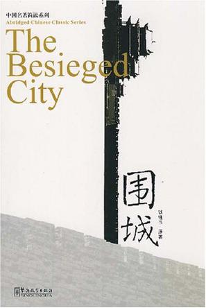
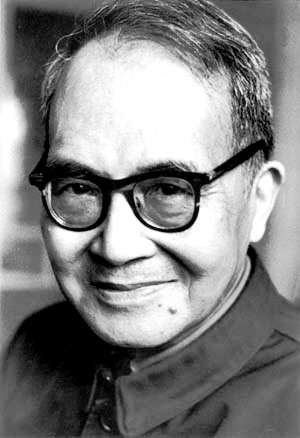

围城
钱钟书简介
钱钟书（1910―1998），原名仰先，字哲良，后改名钟书，字默存，号槐聚，曾用笔名中书君，江苏无锡人，育有一女钱瑗（1937年-1997年），中国现代著名作家、文学研究家，曾为《毛泽东选集》英文版翻译小组成员，晚年就职于中国社会科学院、任副院长。其父是著名国学家钱基博，在父亲的影响和督导下，自幼打下了良好的国学基础。其后就读于苏州桃坞中学和无锡辅仁中学。书评家夏志清先生认为小说《围城》是“中国近代文学中最有趣、最用心经营的小说，可能是最伟大的一部”。钱钟书在文学，国学，比较文学，文化批评等领域的成就，推崇者甚至冠以“钱学”。
1946年写成并发表了长篇小说《围城》，同年发表短篇小说《人・兽・鬼》。抗战及解放以后，先后担任南京国立中央图书馆总纂、上海国立暨南大学外文系教授、清华大学外文系教授、北京大学文学研究所研究员、中国社会科学院副院长等职务，主要进行翻译和中国文学的研究，出版了《宋诗选注》《旧闻四篇》《七缀集》以及《管锥编》等学术著作。
围城简介
《人间词话》，王国维著。作于1908～1909年，最初发表于《国粹学报》。
围城故事发生于1920到1940年代。主角方鸿渐是个从中国南方乡绅家庭走出的青年人，迫于家庭压力与同乡周家女子订亲。但在其上大学期间，周氏患病早亡。准岳父周先生被方所写的唁电感动，资助他出国求学。
方鸿渐在欧洲游学期间，不理学业。为了给家人一个交待，方于毕业前购买了虚构的“克莱登大学”的博士学位证书，并随海外学成的学生回国。在船上与留学生鲍小姐相识并热恋，但被鲍小姐欺骗感情。同时也遇见了大学同学苏文纨。
到达上海后，在已故未婚妻父亲周先生开办的银行任职。此时，方获得了同学苏文纨的青睐，又与苏的表妹唐晓芙一见钟情，整日周旋于苏、唐二人之间，期间并结识了追求苏文纨的赵辛楣。方最终与苏、唐二人感情终结，苏嫁与诗人曹元朗，而赵也明白方并非其情敌，从此与方惺惺相惜。方鸿渐逐渐与周家不和。
抗战开始，方家逃难至上海的租界。在赵辛楣的引荐下，与赵辛楣、孙柔嘉、顾尔谦、李梅亭几人同赴位于内地的三闾大学任教。由于方鸿渐性格等方面的弱点，陷入了复杂的人际纠纷当中。后与孙柔嘉订婚，并离开三闾大学回到上海。在赵辛楣的帮助下，方鸿渐在一家报馆任职，与孙柔嘉结婚。
婚后，方鸿渐夫妇与方家、孙柔嘉姑母家的矛盾暴露并激化。方鸿渐辞职并与孙柔嘉吵翻，逐渐失去了生活的希望。
《围城》并不仅仅是一部爱情小说。它的内容是多方面的，它的主题和象征是多层次的。
《围城》的象征源自书中人物对话中引用的外国成语，“结婚仿佛金漆的鸟笼，笼子外面的鸟想住进去，笼内的鸟想飞出来；所以结而离，离而结，没有了局。”又说像“被围困的城堡，城外的人想冲进去，城里的人想逃出来。”
但如果仅仅局限于婚姻来谈“围城”困境，显然不是钱钟书的本意。“围城”困境是贯穿于人生各个层次的。后来方鸿渐又重提此事，并评论道：“我近来对人生万事，都有这个感想。”这就是点题之笔。钱钟书在全书安排了许多变奏，使得“围城”的象征意义超越婚姻层次，而形成多声部的共鸣。
《围城》从“围城”这个比喻开始，淋漓尽致地表现了人类的“围城”困境：不断的追求和对所追求到的成功的随之而来的不满足和厌烦，两者之间的矛盾和转换，其间交织着的希望与失望，欢乐与痛苦，执著与动摇――这一切构成的人生万事。“围城”困境告诉我们人生追求的结果很可能是虚妄的，这看起来好像很有点悲观，但骨子里却是个严肃的追求，热忱深埋在冷静之下，一如钱钟书本人的一生。他揭穿了追求终极理想、终极目的的虚妄，这就有可能使追求的过程不再仅仅成为一种手段，而使它本身的重要意义得以被认识和承认，使我们明白追求与希望的无止境而义无反顾，不再堕入虚无。
但钱钟书并不是要简单地演绎这个比喻，他还要下一转语，不时地消除“围城”的象征。钱钟书的夫人杨绛曾经说，如果让方鸿渐与理想中的爱人唐晓芙结婚，然后两人再积爱成怨，以至分手，才真正符合“围城”的字面原义；钱钟书在《谈艺录》中批评王国维对《红楼梦》的误读时，也说过类似的话。方鸿渐想进入唐晓芙的围城却始终不得其门；苏文纨曾经以为已经进入了方鸿渐的围城，其实进入却等于是在外面，而当她与曹元朗结婚并过上真正的市侩生活时――那种生活在钱钟书看来是绝对应该逃离的，她却安之若素；她曾经似乎已经进入了文化的围城，但她只有在成为发国难财的官倒时，才真正找到了自己安身立命之处，你用枪逼着她也不愿意出来的。方鸿渐并不想进入孙柔嘉的生活，可是他糊里糊涂地就进去了；结婚后，他也有想冲出来的冲动，但他是个被动的人，不敢行动，也不会行动。从表面上看，方鸿渐去三闾大学的经历与“围城”的比喻是最相吻合的，但实际上，方鸿渐之所以无法在三闾大学如鱼得水，是因为他还有一些最基本的知识分子操守，或者说最基本的做人的操守。高松年、李梅亭、汪处厚，这些人在那里舍得出来么？